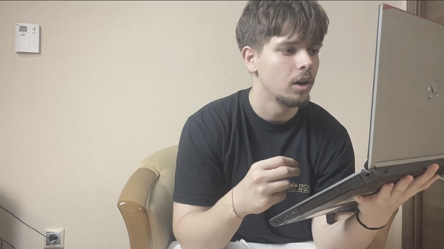
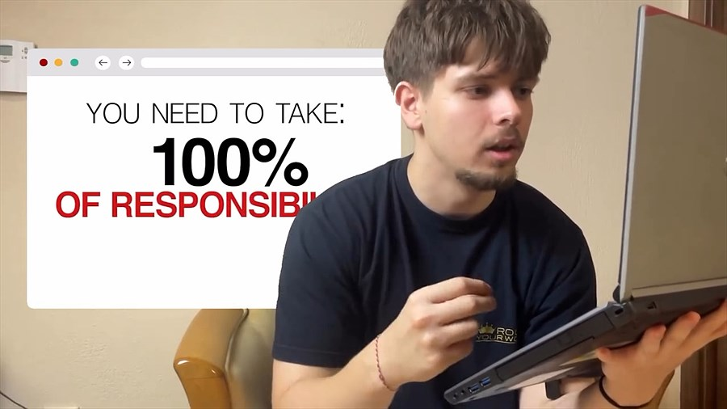
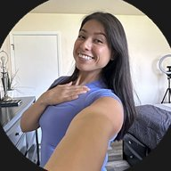
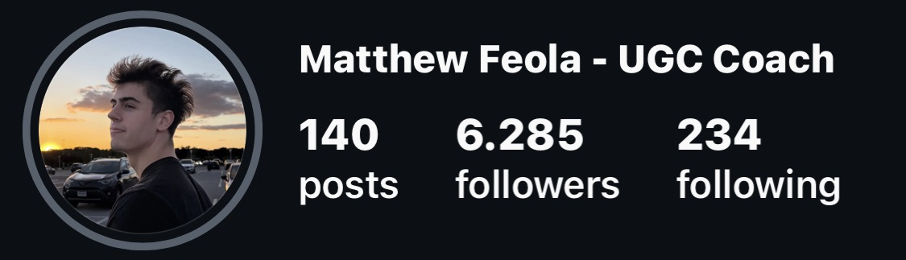

Your content could give theright message through theright visual design.
I find emotion in your raw videos and turn it into visual design — not just a motion graphic, but a done-for-you service that takes care of your personal brand's video design so you can scale.

RAW
DESIGNED$110k+/mo in student revenue
dm me "ugc" to get started
scaling coaches & brands with organic content
dm me "scale" to work with me 1:1
DM me "Beyond" for 1-1 mentorship
learn how I do it for free/book a haircut 👇

DM "FIT" for 1:1 Coaching 💜
Build a personal brand that feels like you.
You already did the hard part — showing up and saying something real. I handle the rest.
Getting to know your story
We dig into your story and your ICP — who you're really talking to and why they should care — so every piece of content we make actually sounds like you and lands with the right people.
Every second, designed
Every second of visual design, every cut, every frame is made to count — built to hit an emotion first, because content that makes someone feel something is what earns their trust, and trust is what turns a viewer into a client.
Editing
We're on deadline, every time, and we own 100% of the video editing process from start to finish — so you get your time back to scale your business instead of babysitting your content.
Have your own Tracking Dashboard.
The moment we align on a partnership, a private dashboard becomes yours — watch revenue and cash collected climb day by day, keep count of the leads your content pulls in, and hold every brand asset in one place. Here's a look at what's waiting for you.
The story your client needs to hear before buying.
I'm Sotiris — I work with coaches and creators who know they can level up their personal brand through creative visual design, and find their ICPs through the internet.
I've worked with coaches pulling in $100k+ a month, helping them tighten up their positioning, visuals, and content so their personal brand actually pulls its weight.
Here's the thing — at that level, it's rarely a "content" problem. It's a clarity problem. Visuals that don't match, a message that's all over the place, output that looks like everyone else's. End result: people who are genuinely great at what they do, staying invisible online.
That's the gap I close — through editing and visual design that digs out what's actually different about you, then turns it into content that works for you around the clock.
From 2,183 to 6,285 followers — and 100+ leads.
Matthew Feola came to me at 2,183 followers. The content we made together pulled in over 100 leads and helped grow him to 6,285 — here's him telling it.
"Sotiris was my editor for my personal brand and, honestly, the best editor I've ever had. Super quick turnaround — genuinely less than six hours, always under 24. The quality was insane, and you don't even need to give him a reference video. Unlike most editors I've worked with, he just gets what you want; after a couple of videos he already had a great idea of the style I was going for. Working with him was an amazing experience — I'd recommend it to anyone."


Let's find if you are a good fit for this offer.
15 minutes. I'll tell you honestly whether your content has what it needs — no pitch deck required.
Book a call →